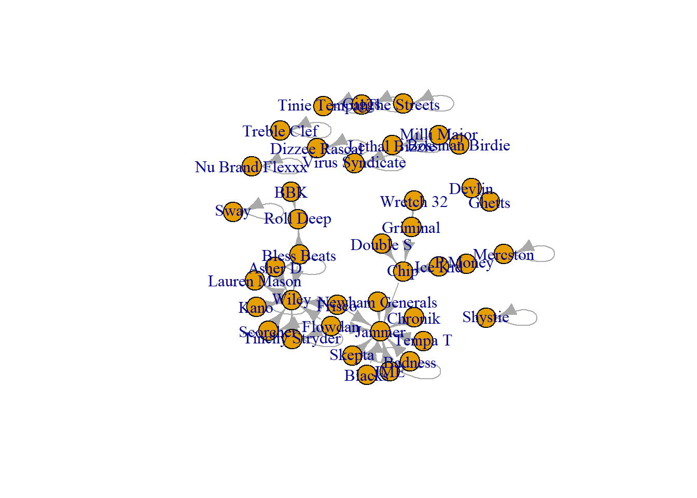

library(igraph)
library(dplyr)
library(htmlwidgets) # this helps us work with widgets in markdown
library(htmltools) #this allows the widgets to present in the markdown file
library(visNetwork) # This is the first interactive network package
library(threejs) # This is the second interactive network package12 Interactive Networks Visualisations
So far, we have worked only on static visualisations but there are other ways you can present network data that are a little more fun and can be more instructive. In this chapter we are going to work on two interactive networks and discuss the utility of both. There are multiple packages in R that help you put together interactive visualisations using the visnetwork and threejs packages. For a more complete tutorial on some others, take a look at Katya Ognyanova’s website.
12.1 Interactive networks using visNetwork
First, we will be using the visnetwork to create a network visualisation that you can click on, move and view labels one at a time. To do this, we are going to use the data I put together previously that we have used when working on node and edge characteristics. Like in that tutorial, you will need to set your own working directory for the below code to run and pull in each sheet.
vertices.df <- read.csv(file.choose()) # select Node data.csv
edges.df <- read.csv(file.choose()) # select Edge data.csvLet’s take a look at these objects so you can see how these data are structured. You will see that the vertices.df object has a few node characteristics that help describe those in the network. The edges.df object contains the connections between the nodes in the network and some information about those connections. These will all come into play as we construct our interactive networks based on it.
head(vertices.df) name age role gender
1 A 20 DJ F
2 B 25 MC M
3 C 21 DJ F
4 D 23 crew M
5 E 24 MC M
6 F 23 MC Fhead(edges.df) from to freq affinity
1 A B 2 pos
2 A C 1 neg
3 A D 1 pos
4 A E 1 neg
5 A F 3 neg
6 E F 2 posThe visNetwork package requires that our each node has a unique ID. This ID is not separate from the network (i.e. a row number in a dataframe), rather, this unique ID MUST MATCH the names of the vertices. THIS IS IMPORTAT. If you are to create this type of network, you will need both the edge information and the node information. Remember, the latter, the node information, can simply consist of just an id column. So, if you are working with a network that only has a an adjacency matrix or a network, you can create a dataframe that has the other half you need - a dataframe with the node id (names).
In our case, we have a network that I have created that has both of these separate dataframes that we can use to create our network. First, we need the aforementioned ID for each node. In this case, we can use the rename() function from the dplyr package to rename the column ‘name’ to id. The vistNetwork package can now detect the unique ids that define each node.
vertices.df <- vertices.df %>%
rename(id = name)Now that our data is structured in the correct format, we can use the visnNetwork() argument to create our interactive network! Outside of markdown, if you are working in a script file, this will appear in the viewer window of your Rstudio. Here, however, it will appear in a widget below the code chunk. Play around with the network. You can scroll in and out. Select and move a node around in the network.
visNetwork(vertices.df, edges.df)The package visNetwork requires that you have certain variables available to it in order for the visualisation to reflect the information you have. Below, I demonstrate the label, title, and shadow options. Label does what you expect, it labels the nodes. The above visualisation does not have labels because visNetwork did not find a column in the vertices.df that is called label. Title is an option that enables you to click on the node and get more information about it. Shadow shows a small shadow behind the node - you can set this as TRUE or FALSE.
Below, I set the label as the id. To do this, I have to ensure that R recognises these as strings or characters. Hence I use the as.character() function. Then, I set the title of the node to reflect the node’s gender. Then, for fun, I like the shadows!!
vertices.df$label <- as.character(vertices.df$id)
vertices.df$title <- vertices.df$gender
vertices.df$shadow <- TRUE
head(vertices.df) id age role gender label title shadow
1 A 20 DJ F A F TRUE
2 B 25 MC M B M TRUE
3 C 21 DJ F C F TRUE
4 D 23 crew M D M TRUE
5 E 24 MC M E M TRUE
6 F 23 MC F F F TRUEThe object now has these columns in it! Let’s see the visual that it creates!
visNetwork(vertices.df, edges.df) Here is a more complete visualisation using other options available to you with the visNetwork() function. The width = 100% ensures that the visualisation fills the space in the widget. The height option also does something similar. The background, main, submain, and footer options show other ways you can alter the visualisation. Fun, right??
visNetwork(vertices.df, edges.df, background="wheat",
main="TITLE HERE", submain="SUB HERE!")One final thing that we can do is change the colours of the nodes to represent the communities they are a part of. I use the louvain algorithm with the igraph package. To do this, I create a igraph object from both data frames, run the clustering. Then I designate the “group” characteristic of the vertices data frame using the membership from the clustering object. The new visual
edges <- graph_from_data_frame(d = edges.df, vertices = vertices.df, directed = F)
clust <- cluster_louvain(edges)
vertices.df$group <- as.factor(clust$membership)
visNetwork(vertices.df, edges.df)%>%
visOptions(highlightNearest = T, nodesIdSelection = T)12.2 3D interctive networks with threejs
If you thought the visNetwork visualisation was cool… wait till you see these ones!!
Here we will cover a second package, threejs and create some slightly different interactive visualisations. For this one, let’s use different network data. You need an network object created in igraph. We could use the data we have been using so far by creating an igraph object the way we have been doing so ar. However, to mix things up, let’s use our familiar Grime network.
Here I bring in the Grime 2008 edgelist, clean it and store it in an object called grime_08_clean. This process if familiar to you now. You are pros!
grime_edge_list <- read.csv(file.choose(), header = TRUE) # select GRIME_EDGE_LIST_2008 _GRIME ONLY.csv
grime_08 <- graph_from_data_frame(d= grime_edge_list, directed = TRUE)
plot(grime_08)
grime_08_clean <- delete.edges(grime_08, E(grime_08)[which_loop(grime_08)])Here we can create an object that threejs recognises. The function we need to use is the graphjs() that will convert your network into a 3D interactive network a bit like a molecular or planetary model. You should be able to do this with any one-mode network. In this chunk I create an object that has the 3D network called grime_08_3d. Then, I visualise it.
grime_08_3d <- graphjs(grime_08_clean)
grime_08_3dWe can make this visualisation a little cleaner by deleting the isolates. To do this, I use the delete_vertices() argument from the igraph package. Then, I recreate an object, now called grime_08_isol_3d. I also add a title to our visualisation.
grime_isol <- delete_vertices(grime_08_clean, which(degree(grime_08_clean)==0))
grime_08_isol_3d <- graphjs(grime_isol, main="Grime 2008!")
grime_08_isol_3dOkay, this is great, but we can tell a bit more of a story here. Let’s use something we are familiar with, a node attribute, to help us pull out a bit more of a story from this visualisation. I want to highlight highly central nodes in this network and change their colour if they are highly central (let’s say a degree above 3). Once again, the package threejs looks for specific characteristics of your network to visualise. One of these is the characteristic “color”. In the chunk below, I use the set_vertex_attr() function from igraph to create an attribute called color that threejs can recognise. Then, I use an ifelse() statement to set the colour of highly central attributes to red and others white. For sake of comparison, I copy the grime_isol object we worked on above, to a new object called grime_isol_colour. Although, you could set the vertex attribute to the object directly. I can also set the size of the node here to further its readability. The package threejs recognises the option ‘size’ as being the size of the node in the visualisation.
grime_isol_colour <- grime_isol
grime_isol_colour <- set_vertex_attr(grime_isol, "color", value = ifelse(degree(grime_isol) > 3, "red", "ivory"))
V(grime_isol_colour)$size <- 5
grime_08_isol_3d_col <- graphjs(grime_isol_colour, main="Major Collaborators in Grime 2008!", bg = "black")
grime_08_isol_3d_colIf you would like to save this widget, you can do so using the savewidget() function from the htmltools package. Then you can call upon it using the browseURL function. However, in order to make this work well in a html format, you will need to use the browsable() function on the object. The chunk below should open an html page with your network (remove the #).
grime_08_isol_3d_col <- browsable(grime_08_isol_3d_col)
saveWidget(grime_08_isol_3d_col, file="grime_2008_JS.html")
browseURL("grime_2008_JS.html")Finally, you can further represent elements of your graph in the 3D network. For example, you can change the colours of the nodes to reflect the membership of which community they are in. In this chunk, I use the infomap community detection algorithm to identify which communities the nodes are in. Then, I create a new node level characteristic called “color” that captures which community they are in. If you have many communities, you may need to use a colour palette package like vidris or RColorBrewer,
grime_coms <- grime_isol
cl <- cluster_infomap(grime_coms)
V(grime_coms)$color <- cl$membership
grime_coms3D <- graphjs(grime_coms, edge.color = "gray", bg = "white", main = "Communities in Grime 2008")
grime_coms3D12.3 Closing Thoughts on Interactive Networks
I think these networks are cool. However, I really think they are a bit of a gimmick! Their utility is limited at best. For example, they only really work in online spaces while are completely useless in print. The click functions and maneuverable attributes of these graphs are fun to play around with, perhaps useful in grabbing the imagination of readers. However, many academic uses for network analysis is much easier to present using static graphs. Still… they are loads of fun!